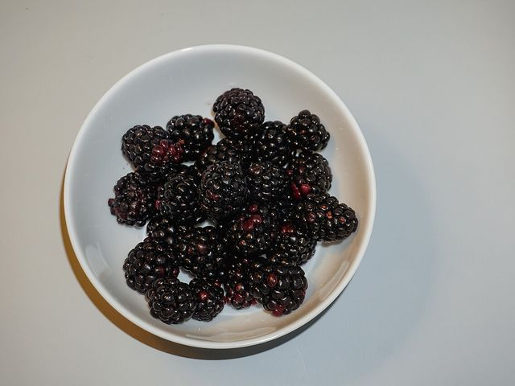
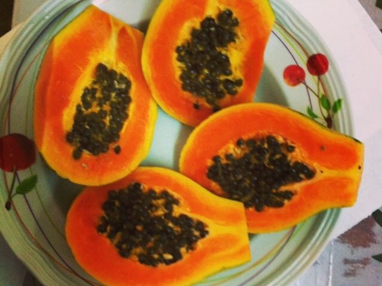
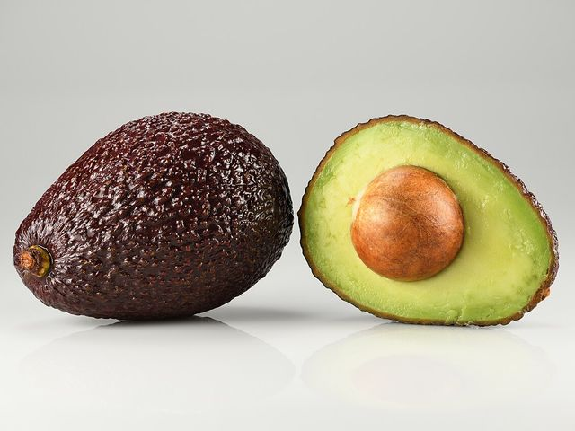
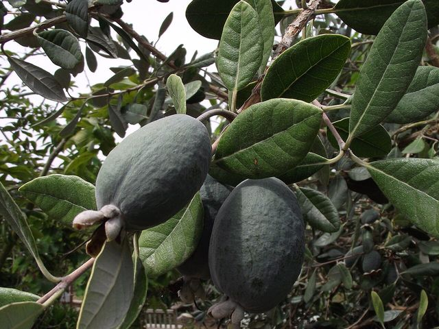

Frutas de temporada
Uchuva, mora, lulo, granadilla y feijoa, según lo que esté en cosecha cada mes.
Desde $4.500
Todo lo que necesitas para el mercado de la semana, escogido a mano y con precios publicados. Puedes comprar en el mostrador o pedirlo a domicilio.
Uchuva, mora, lulo, granadilla y feijoa, según lo que esté en cosecha cada mes.
Desde $4.500
Mango, banano, piña, papaya y maracuyá, en su punto para comer o para jugo.
Desde $3.400 el kilo
Tomate, cebolla, zanahoria, habichuela, pimentón y ahuyama para la cocina diaria.
Desde $2.600 el kilo
Papa pastusa y criolla, yuca, arracacha y plátano verde o maduro.
Desde $1.500
Cilantro, perejil, hierbabuena, cebolla larga y laurel, en atados frescos.
Desde $1.500 el atado
Canasta familiar semanal y canastas de fruta para regalo, armadas el mismo día.
Desde $45.000
Una muestra de lo que llegó esta madrugada. Todas están en la lista de precios de abajo.






Actualizamos los precios cada lunes según lo que pagamos en la plaza. Los productos por kilo se pesan frente a ti en la tienda o se ajustan al peso real en el domicilio.
| Producto | Presentación | Precio |
|---|---|---|
| Frutas | ||
| Mango Tommy | Kilo | $7.200 |
| Uchuva | Canastilla de 250 g | $4.500 |
| Banano criollo | Kilo | $3.400 |
| Mora de Castilla | Libra | $5.200 |
| Lulo | Kilo | $8.000 |
| Granadilla | Kilo | $9.500 |
| Maracuyá | Kilo | $6.800 |
| Feijoa | Kilo | $7.800 |
| Papaya maradol | Kilo | $3.900 |
| Aguacate Hass | Unidad | $3.200 |
| Verduras y tubérculos | ||
| Papa pastusa | Kilo | $2.900 |
| Tomate chonto | Kilo | $4.600 |
| Cebolla cabezona blanca | Kilo | $3.800 |
| Zanahoria | Kilo | $2.600 |
| Plátano hartón verde | Unidad | $1.500 |
| Hierbas y canastas | ||
| Cilantro | Atado | $1.500 |
| Hierbabuena | Atado | $1.500 |
| Canasta de frutas para regalo | Unidad | $45.000 |
| Canasta familiar semanal | Unidad (12 kg aprox.) | $85.000 |
| Domicilio: $6.000. Gratis en pedidos desde $60.000. | ||
Los pedidos confirmados antes de las se entregan el mismo día en Los Mártires, Teusaquillo y Puente Aranda.
Armamos canastas con los productos que elijas, para el mercado de la semana o para regalar. Encárgalas con un día de anticipación.
Entrega diaria antes de las para restaurantes y cafeterías del sector, con precio por volumen y factura electrónica.
| Día | Tienda | Domicilios |
|---|---|---|
| Lunes a viernes | a | a |
| Sábados | a | a |
| Domingos y festivos | a | Sin domicilios |
Estas son las medidas que usamos en la tienda y en la lista de precios: